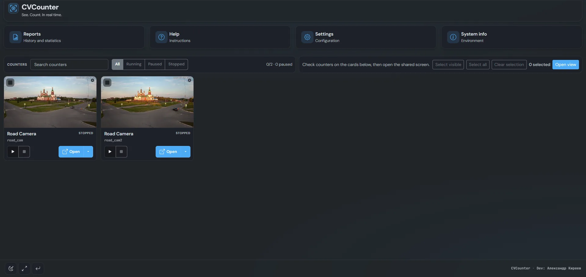

Retail analytics from camera
Entrance flow, shelf or checkout zones — count in the browser and save shifts to reports.
The problem
Retail needs footfall and zone numbers, but not always a heavy SaaS subscription that uploads frames to the cloud.
How CVCounter helps
Run on your own server, use the web UI in kiosk mode, batches (“New batch”), metadata fields, and reports. Frames and camera URLs are never sent with telemetry (telemetry is optional and anonymized).
